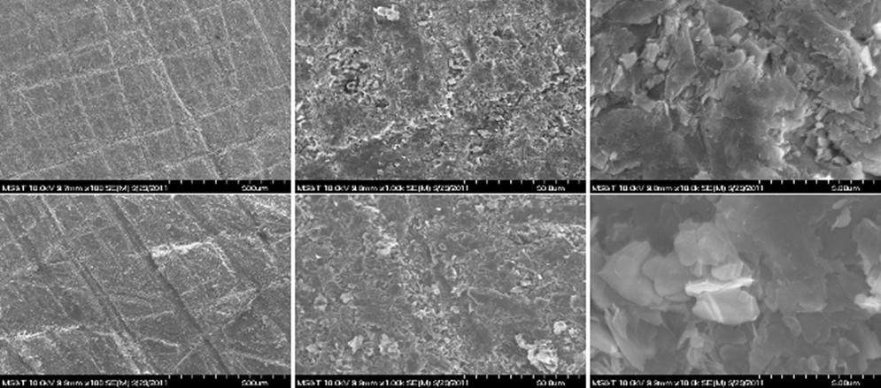

Multi-mode Microtube-Electrospray Propulsion
Ongoing
Ongoing - Talbot 18C - Prof. Joshua Rovey
Current technology limits rocket propulsion to high-thrust, low-specific impulse chemical thrusters or high-specific impulse, low-thrust electric thrusters. Dual-mode spacecraft propulsion concepts attempt to combine both types of thrusters into a single system, thereby increasing the possible missions that can be achieved by the satellite since it can operate in either high-thrust or high-specific impulse modes. The result is the capability to launch a satellite with a flexible mission plan that allows for changes to the mission as needs arise. The dual-mode system with the most benefit will save mass by utilizing a single propellant for both modes, so that only one propellant tank and accompanying hardware is necessary. The challenge is then to find a single propellant capable of both chemical and electric propulsion. Energetic ionic liquids, essentially molten salts, have shown theoretical potential to function as both chemical monopropellants and electric electrospray propellants.
Our current research has identified several novel ionic liquids that may serve as potential dual-mode monopropellant/electrospray propellants. Experimental work is currently being conducted to determine the ignition capabilities of the ionic liquids. The research hopes to determine if the ionic liquids can be ignited practically by methods typically used in existing monopropellant thrusters. Specifically, we a using a micro-reactor to study the ignition properties of the ionic liquids both by thermal and catalytic means.
The multi-mode microtube-electrospray propulsion system combines a catalytic chemical microtube propulsion system with an electric electrospray propulsion system. The system consists of one propellant tank, one set of feed lines/valves, one thruster that can be operated as high-thrust low-specific impulse chemical (180 sec Isp) or low-thrust high-specific impulse electric (>800 sec Isp) propulsion. It significantly expands the design space for satellites, while still fitting within the same mass/volume/power requirements. Perhaps most importantly it makes spacecraft flexible and adjustable, enabling the mission to be changed in real-time and enabling spacecraft to be quickly launched without a predetermined mission. We have already created the propellant, demonstrated the electrospray electric mode, and demonstrated chemical reactivity for the chemical mode. The technology is at TRL 2.5. We have demonstrated the electrospray electric mode (it’s at TRL 3), but we have not yet demonstrated the catalytic microtube chemical mode (it’s at TRL 2). We are actively seeking support to (1) demonstrate the chemical microtube mode (raising TRL to 3), (2) design, fabricate, and test an integrated microtube electrospray thruster, and (3) demonstrate back-to-back chemical mode and electric mode operation within the same microtube/needle/setup (raising TRL to 4).
Ongoing • Publications
Many current HET efforts are focused on developing and benchmarking models that integrate the important role of surface properties of the channel that contains the plasma discharge. Wall-effects play an important role in both the lifetime and overall performance of the thruster. Properties of the channel wall can affect secondary electron emission, anomalous electron transport, and near-wall conductivity, thereby altering HET performance. Further, wall properties are an important factor in the sputter erosion processes that are known to limit thruster lifetime. Current HET models do not integrate a realistic wall microstructure, but instead rely on sputter yield or secondary electron emission coefficients derived from idealized material tests. Surface properties inside the HET can be very different from those of a pristine test sample. Better understanding of the properties of the HET channel surface is required to produce accurate models of the near-wall physics within the HET channel.
The goal of this study is to develop methods for replicating the worn surface features of the BN channel without operating it for extended duration inside an HET. Future studies can then analyze the effects of changes in surface features on secondary electron emission and sputter yield without expensive long duration modification of samples. Samples have been tested using manual abrasive methods to modify the roughness of pristine samples to match roughness values found in actual HET thruster samples. Heat treatments have also been preformed on samples to study how the chemistry of the ceramic can be modified. Currently an ion bombardment system is being constructed to expose both pristine and manually modified ceramic samples to high energy ions.
Heated sample microstructure. Both images are at 10,000x magnification, the left is a sample of grade M26 heated to 400 C. The right image is of grade HP heated to 1800 C.
Hollow cathode temperature test. The bright glow in the center is the tantalum wire coil at roughly 1100 degrees Celsius.
SEM images of 120 grit sandpaper test results. The top row shows from left to right 100x, 1000x, and 10,000x magnification images of grade HP. The bottom row shows the same series of images for grade M26.
Satonik, A.J., Rovey, J.L., and Hilmas, G., “Effects of Plasma Exposure of Boron Nitride Ceramic Insulators for Hall Effect Thrusters,” Journal of Propulsion and Power, Vol. 30, Issue 3, pp. 656-663, May-June 2014.
Zidar, D.G. and Rovey, J.L., "Hall-effect Thruster Channel Surface Properties Investigation," Journal of Propulsion and Power, Vol. 28, No. 2, Mar-Apr. 2012.
Satonik, A.J. and Rovey, J.L., "Modification of Boron Nitride Ceramic to Replicate Hall Effect Thruster Surface Wear," AIAA-2012-0198, 50th Aerospace Sciences Meeting, Nashville, TN, Jan. 9 - 12, 2012.
Zidar, D.G. and Rovey, J.L., "Hall-effect Thruster Channel Surface Properties Investigation," AIAA-2011-5993, 47th Joint Propulsion Conference, San Diego, CA., July 31 - Aug. 3, 2011.
Ongoing • How It Works • Feasibility of Concept
The ability to fabricate nanoscale structures enables a new class of small-scale particle accelerators. For the past 50+ years acceleration of particles has relied on classical electrodynamic acceleration (e.g., static or dynamic electromagnetic fields) requiring relatively large devices to accelerate particles to modest and high energy levels. With the advent of nanoscale manufacturing it is now possible to create nanoscale structures engineered to achieve desired interactions with electromagnetic waves within the visible spectrum, either photonic or plasmonic. Photonic devices manipulate light to perform their function, while plasmonic devices manipulate plasmons. The main question of our research is “How do we harness plasmonic and photonic physics to accelerate nanoparticles and ions for space propulsion and other applications?” This area has only recently begun to be explored. We are actively seeking support to (1) simulate light-matter interaction of layered material geometries in cylindrical plasmonic accelerators; (2) investigate techniques for matching particle and plasmon waves in cylindrical waveguides; and (3) fabricate and characterize light-matter interaction and particle manipulation with asymmetric plasmonic nanostructures.
Sunlight is focused onto deep-subwavelength metallic nanostructures through a lens
Resonant interaction and coupling of light with the nanostructure excites surface plasmon polaritons that generate a strong gradient optical force field
Nanoparticles (e.g., glass beads or metallic articles) are accelerated by the gradient force field and expelled at high speeds
Preliminary simulations of asymmetric thruster geometry show strong gradient optical force for accelerating nanoparticles
Plasmonic thruster arrays can produce useful thrust at reasonable specific impulse: 1.5 μN at 141 sec (2000 thruster array, 106 particles/sec, 25μmx5mm array size)
A metamaterial modifies an electromagnetic wave’s propagation by resonating with the wave fields on a subwavelength scale. Solid metamaterials have been studied for high power microwaves of 1-300 GHz at peak power levels above 100 MW, the problem is that structures within the solid metamaterial breakdown due to the inherent high electric field strength of highpower microwaves. This problem may be alleviated by using a metamaterial that is already broken down, i.e., a plasma metamaterial.
Further, plasma metamaterial has the unique capability of being electrically reconfigurable. Whereas a solid metamaterial is designed and fabricated to have a single type of (or small bandwidth of) interaction with an electromagnetic wave, plasma can be easily adjusted, electrically, to create a wide bandwidth of possible wave interactions. Our previous work has demonstrated the reconfigurability of one plasma filament within dielectric barrier discharge plasma. Our goal is to extend this result and develop the capability to continuously control the entire plasma micro and macrostructure, enabling plasma metamaterial to be quickly tuned to achieve desired plasma-wave interactions. We are actively seeking support to (1) simulate the interaction of microwaves with continuously adjustable plasma metamaterial structures/configurations; (2) conduct fundamental plasma experiments to demonstrate those plasma structures/configurations; and (3) experimentally demonstrate the microwave-plasma interaction.

Mesh and Needle Filaments

Only Mesh Filaments

Needle Limiting Surrounding Filaments

Needle Limiting Surrounding Charge
Ongoing
Electric solid propellants are an attractive option for propulsion because they are ignited only by an applied electric current. This leads to capabilities such as on-demand throttling and reignition in chemical combustion operation, and it lends itself to application in electric propulsion. In this work, the plasma plume created by electric solid propellant pulsed microthrusters is investigated using a nude Faraday probe, a triple Langmuir probe, and residual gas analysis. The thrusters are tested at a vacuum level of 2×10−5torr. Results indicate an average plume electron temperature of 1.7 eV and a density of 1011 to 1014cm−3. A time-of-flight analysis indicates an exhaust velocity of 1500–1650m/s on the centerline. Additionally, ionization fraction is estimated to be 0.3% for an ablation mass bit of 215μg on average. Thermal equilibrium and adiabatic expansion calculations suggest a nonequilibrium gas with high-temperature electrons and lower-temperature neutral and ion species. Results indicate the pulsed microthruster operates similar to a coaxial pulsed plasma thruster, which is dominated by electrothermal effects.